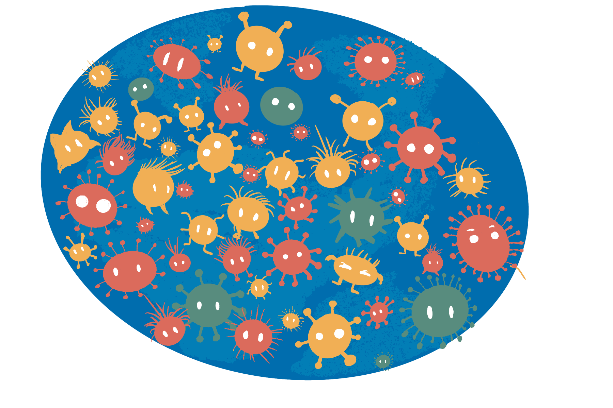
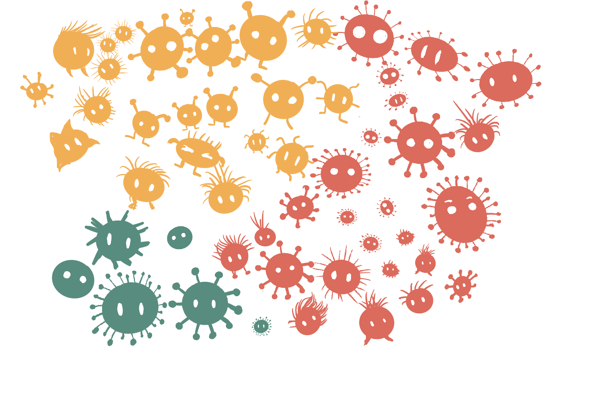

ETC5512
Lecture 2: Introduction to Data Collection Methods
Lecturer: Kate Saunders
Department of Econometrics and Business Statistics
- ETC5512.Clayton-x@monash.edu
- Wild Caught Data
- wcd.numbat.space
Getting Curious
Starts by asking questions
What would you be curious about … ?
- … about air travel in the USA?
What would you be curious about … ?
- … about people in Australia?
What would you be curious about … ?
- … about how people vote in Australia?


What would you be curious about … ?
- … About Animals in Australia
Data Analysis starts with curiosity
but needs to be
tempered with skepticism
Today’s lecture
What we’ll cover:
Asking questions about our data
Thinking about if our data is suitable to answer those questions
That means learning about different types of sampling
Learn about how data is collected
Population vs Sample
Planet Cute Creatures
Questions
How many yellow, green and red alien creatures?
What is the distribution of the height of the alien creatures?
Are yellow creatures more likely to have hair?
Does the hair growth formula work on these creatures?
Now that we have a question
we can find/use/collect data
to obtain answers.
How do we get the data?
What is the population?

It is rare to have resources to measure ALL of the population, take we a sample.
Population parameters:
- Green: 6/53=0.113,
- Yellow: 22/53=0.416,
- Red: 25/53=0.472.
Typically don’t know the values.
Sample statistics:
- Green: 1/21=0.048,
- Yellow: 10/21=0.476,
- Red: 10/21=0.476.
Are estimates of true parameters.
Understanding the population
Important
Collecting data on the entire population is normally too expensive or infeasible!
Note
If we can collect data on the entire population it is called a census
Often only collect data only on a subset of the population.
So how should we sample the population?
There are many sampling schemes!
Sampling
Why sample
Goal of a sampling scheme
We want to get accurate information from the sample in order to answer your question about the population.
When sampling think about
Think!!!
Accurate sampling involves identifying:
The population of interest (e.g. if studying about male baldness pattern, your population of interest is the biologically male population),
what responses (dependent variables) or covariates (explanatory or independent or predictor variables) to capture and how to measure it (e.g. do you collect their age? Which range of age they are in? Their hair count? The thickness of the hair?),
the sample size (how many samples do we need?),
any structure that will be in the data (e.g. population structures, repeated cross-sectional data, panel or longitudinal data), and
any restrictions (e.g. ethical concerns, limitation on collecting data).
Some sampling types
Simple random sampling
Every unit in the population has the same sample probability to be drawn.
Stratified random sampling
Units are drawn from non-overlapping sub-populations.

Sampling strategies
Sampling strategies combine knowledge about the population with statistical methods.
For example:
- designing so your sample estimates give (theoretically) unbiased estimates of the population parameters,
- sample so the data will be representative of the subpopulations (e.g. stratified random sampling), or
- oversampling or undersampling to compensate for imbalance in classes.
Warning
What might go wrong with a simple random sampling of 10 creatures from this population?
Random and non-random selections
Units (population members) ideally are sampled randomly, but often selections are made in a non-random manner.
Example
If I survey every 10th household in a street, is that a random selection?
Important
What do you think can go wrong if we don’t sample randomly?
What’s wrong with these examples?
Breakout Session: Discussion
You want to know the attitude of the creatures aboout working at home.
So you call phone numbers listed in the order of telephone directory and stop when you have 20 observations.
You want to get the hair count distribution of the Planet Cute Creatures population.
So you sample creatures from the Society of Bald Extraterrestrials.
Items 1 and 2 are toy examples. Do you know of any examples of bad sample design in the real world?
Data Collection
Reality of data collection
Designing a data collection is hard.
There may be unknown or hidden structures in the population.
It may add complex structural elements, e.g.
- Cross-sectional, repeated cross-sectional (e.g. case-control),
- Panel or longitudinal (e.g. cohort studies), and so on.
- Clusters or hierarchies (e.g. students in schools in states)
You may have introduce unintended or unknown structures in the data, e.g. confounded variables.
It’s further complicated by:
- Non-response,
- Missing data,
- Mis-measured data,
- Dropouts, and censoring,
- ….. 😱
Observational Studies
Observational Studies
Sampling from a population typically yields data considered to be an observational studies.
Almost all open data are from observational studies.
An observational study aims to draw inferences about a population from a sample where independent variables are not intentionally allocated to units within the sample for the purpose of a study.
Data considered in observational studies are observational data.
Examples of Observational Studies
Tip
- Who will win the 2022 Australian federal election?
- Survey households
Tip
- Where are the best schools?
- Government administrative data
Tip
- Who is buying my products?
- Customer database
Experimental studies
Experimental studies
A scientific claim generally needs to be validated by an experimental study.
In an experimental study, a causal variable of interest (referred to as treatment) is administered to recipients while holding other covariates at controlled settings to observe responses.
Data from an experiment are referred to as experimental data.
Examples
Tip
- Is the vaccine effective against flu?
- The data of whether the person who was administered the vaccine or placebo caught the flu afterwards.
Tip
- Which fertiliser brand is most effective for wheat yield?
- Yield data from crop field trial with plots treated with one of the three fertiliser brands.
Tip
- Does the A/B website design affect customer purchase rates?
- Purchase data from an experiment where customers were randomly shown either version A or B of the website.
Experimental units
Note
Experimental units are recipients of the allocated treatment such that no sub-division of it can receive another treatment independently.
For the fertiliser example: The experimental units are the plots of land (fields) receiving different fertilisers.
For the vaccine example: The experimental units are the individual patients who receive either vaccine or placebo.
In the A/B testing example: The experimental units are the individual website visitors who see version A or B.
Observational units
Note
Observational units are units that you measure the response on.
For the fertiliser example: The observational units are the same plots of land where wheat yield is measured.
For the vaccine example: The observational units are the same individual patients whose flu status is observed.
In the A/B testing example: The observational units are the same website visitors whose purchasing behavior is tracked.
Observational Units
Note
Observational unit is not the observation (the response)! The wheat yield, flu status, and purchase decisions are the observations, not the observational units.
Sometimes the experimental units are the same as the observational units, as in these examples.
Concept check
Warning
Prof Android delivers their lecture by reciting word-to-word from the text in a monotone.
Prof Alien delivers their lecture by transmitting the information directly to the students mind.
You want to see if one of the methods is more effective.
Students in class 1, 3, 4, 7 and 10 have Prof Android.
Students in class 2, 5, 6, 8 and 9 have Prof Alien.
What are the experimental units?
- It’s the classes.
Concept Check
Warning
Carrying on from the previous example…
- Students all sit for the same exam.
- You record the exam mark for each student.
What are the observational units?
- It’s the students.
Example: french fries (hot chips)
10 week sensory experiment, 12 individuals assessed taste of french fries on several scales, fried in one of 3 different oils, replicated twice.
Example: french fries (hot chips)
Study details
The treatment is oil, and there are 3 of them.
The experimental units are batches of chips.
The observational units are the tasters.
Replication is the two batches of each oil for each week.
Weeks could be considered to be blocks, because the taste might change as the oil ages.
The outcome or measured variable is the rating factor. There are five taste factors recorded.
Randomisation applied to order of tasting (probably), but tasters should be blind to the type of oil.
Systematic Design of Experiments
Randomisation is applied to order of tasting (probably).
Caution
Why don’t we order the treatments in a systematic order?
Isn’t this easier to manage the experiment?
Systematic designs are prone to bias and confounding.
Randomisation
Treatments
- Treatments should be allocated randomly to experimental units.
This avoids:
systematic bias - e.g. all flu vaccine A tested in January (summer) and all flu vaccine B tested in July (winter).
selection bias - e.g. giving the treatment that you are testing to the sick patients and placebo to those that are healthy.
other bias - e.g. the lab technician giving the treatment to the first rat that is taken out of the cage.
Blocking
Blocks are used to group the experimental units into alike units.
Blocking
If well done, blocking can lower the variance of treatment contrasts which increase power.
A non-homogeneous block (i.e. units within block are not alike) can decrease the power of the experiment.
You can form blocks from Natural discrete divisions between experimental units.
e.g. in experiments with people, the gender and age groups makes an obvious block.Grouping experimental units with similar continuous gradients.
e.g., if the experiment is spread out in time or space and there exists no obvious natural boundaries, then an arbitrary boundary may be chosen to group experimental units that are contiguous in time or space.
The Salk Vaccine Field Trial
Salk Vaccine Field Trial
The first polio epidemic hit the United States in 1916 claiming hundreds of thousands of victims, especially children.
National Foundation for Infantile Paralysis (NFIP) was ready to test the vaccine developed by Jonas Salk in the real world.
A controlled experiment was proposed to test the effectiveness of the vaccine on grade 1, 2 and 3 children at selected school districts though the country where the risk of polio was high.
In total two million children were involved although not all parents consented to their children to be vaccinated.
Source: Freedman, Pisani & Purves (2010) Statistics. 4th edition
Trial Design
Design for the NFIP Study
Vaccinate all grade 2 children whose parents would consent, leaving children in grades 1 and 3 as controls.
Can grade 2 children whose parents did not consent be included as control?
What are the potential issues with such a design?
Polio is a contact disease. Would incidences of disease be higher in grade 2?
Randomised controlled trial
An alternate vaccine trial randomly assigned the vaccine and placebo to children.
Some study details
Details
The rate is the number of polio cases per 100,000 in each group.
RCT and NFIP trial sampled from school districts with similar exposures to the polio virus.
Groups labelled with Not Vaccination (no consent), Control and Placebo group did not receive the vaccine.
Results
Let’s take a look at the results now - Why is the rate of polio cases different?
Vaccine Results
| Group | Participants | Rate |
|---|---|---|
| Vaccinated (Grade 2) | 221,998 | 25 |
| Control (Grade 1 & 3) | 725,173 | 54 |
| Not Vaccination (Grade 2, no consent) |
123,605 | 44 |
| Incomplete Vaccination (Grade 2, incomplete) |
9,904 | 40 |
| Group | Participants | Rate |
|---|---|---|
| Vaccinated | 200,745 | 28 |
| Placebo | 201,229 | 71 |
| Not Vaccination (no consent) |
338,778 | 46 |
| Incomplete Vaccination | 8,484 | 24 |
Possible explanations
Tip
Higher income parents would more likely consent to treatment than lower-income parents.
Children of higher income parents are more vulnerable to polio.
Many forms of polio are hard to diagnose and in borderline cases.
Limitations in (social) experiments
Think about
- Cooperation needed from participants
- Ethical objections
- Substitution bias
- Sample attrition
- Hawthorne effect
Warning
Basically, designing and running experiments are hard.
Taxonomy of types of data studies
Types
Experimental data: the gold standard of data collection, but very difficult
Observational data:
- census: all (or close to all) members of the population are measured
- survey sample: each member of the population has a known probability of being selected into the sample, eg cohort study, cross-sectional, case-control, cluster/hierarchical, multi-stage
- non-random sample: it is not known how the sample relates to the population
- censored: events might happen outside of observation interval, eg observed up to 30,000km but brake failure was at 45,000 km
- occurrences: only when an incident is observed is it recorded, eg wildlife sightings, warranty claims, complaints
Important
Sample and Population
Knowing how the sample of data relates to the population is an essential ingredient for making inferential statements and making decisions with data.
Pop Quiz
Observational (what type) or experimental data?
What type of data is ?
Data: Airline traffic (on-time performance database) in the USA as available from https://www.bts.gov.
What is in it: Records of every commercial flight operated in the USA since the 1980s, that has carried passengers.
OBSERVATIONAL, CENSUS
Always ask yourself “What is missing?”
Observational (what type) or experimental data?
What type of data is ?
Data: National Longitudinal Survey of Youth 1979 from the US Bureau of Labour Statistics https://www.nlsinfo.org/content/cohorts/NLSY79
What is in it: Records data about people born between 1957 and 1964. At the time of first interview, respondents’ ages ranged from 14 to 22.
OBSERVATIONAL, SURVEY SAMPLE
Always ask yourself “What is the population?”
Observational (what type) or experimental data?
What type of data is ?
Data: Atlas of Living Australia at https://www.ala.org.au.
What is in it: The Atlas of Living Australia (ALA) is a collaborative, digital, open infrastructure that pulls together Australian biodiversity data from multiple sources, making it accessible and reusable.
The ALA helps to create a more detailed picture of Australia’s biodiversity for scientists, policy makers, environmental planners and land managers, industry and the general public, and enables them to work more efficiently.
OBSERVATIONAL, OCCURRENCE
Always ask yourself “What is missing?†and “What is the population?”
Observational (what type) or experimental data?
Data
Data / what is it: The US National Institute of Health provides a catalog of medical studies including many COVID studies. Here is one that studies the “Safety and Efficacy of C21 in Subjects With COVID-19”.
EXPERIMENTAL
Think about what are the treatments? Experimental units? Outcome measure? Randomisation?
Wrap Up
Summary
Introduction to Data Collection Methods
Encouraged you to be curious about your data!
Now understand the difference between sample vs population
Covered important aspects to sampling design
Exposed you to different types of data collection methods
Going forward: Think critically about whether the data collected is suitable for what you are curious about!
Drop In Slides
Ex-Tropical Cyclone Alfred
Warning-Value Chain

- Hoffmann, D., Ebert, E. E., Mooney, C., Golding, B., & Potter, S. (2023). Using value chain approaches to evaluate the end-to-end warning chain. Advances in Science and Research, 20, 73-79.
Today’s Drop In & Practice
Your Job:
Find data sets that are useful along the warning value chain
Check licences for those data sets, are they open?
Review the data sets for FAIR Principles and 5-star quality
These data sets are important for
- Innovating / creating solutions
- Evaluating warning response
- Planning for the future
IPCC AR6 Risk Framework
In addition to the warning value chain consider:

To get you started
Try to find some of your own!
ETC5512